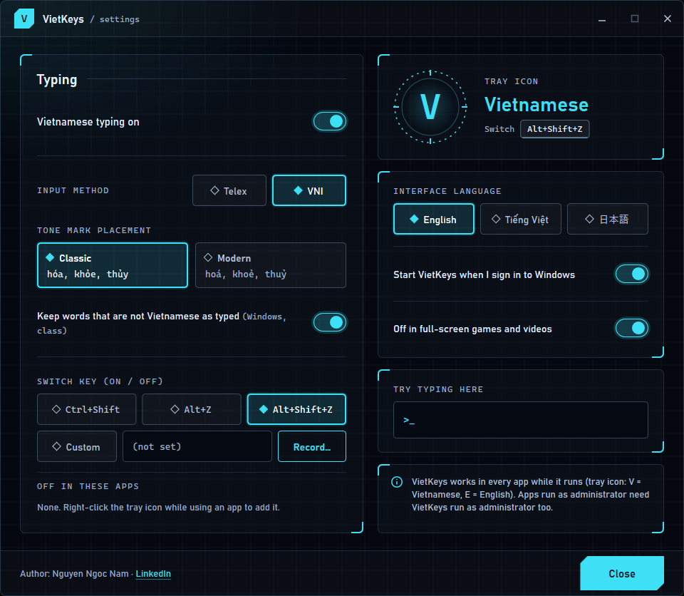

Telex 和 VNI
符号和声调可在单词任意位置输入（tienge → tiêng）。继续输入时，声调会自动移到正确的元音上：hoaf → hòa，再输入 n → hoàn。
支持 Telex 和 VNI，适用于 Windows 11 记事本、浏览器、Office、聊天软件等所有应用，并可与中文、日语、韩语输入法同时使用。只是一个小程序，无需在 Windows 中添加键盘。
为什么选择 VietKeys
越南语输入工具通过先发送退格键、再发送新字母来修改单词。如果多个退格键同时到达，一些应用（例如开启日语输入法时的 Windows 11 记事本）只会处理其中一部分，导致文字出错。VietKeys 按顺序逐个发送退格键，每个单词都能正确输出。
已在 Windows 11 记事本（微软日语输入法）、普通文本框和富文本框中，通过自动输入测试验证。
| 一次性发送 | VietKeys |
|---|---|
| toôi | tôi |
| dđang | đang |
| tiêńg | tiếng |
| chaào | chào |
功能
符号和声调可在单词任意位置输入（tienge → tiêng）。继续输入时，声调会自动移到正确的元音上：hoaf → hòa，再输入 n → hoàn。
输入法开启时（あ / 中 / 한），VietKeys 会把所有按键交给它。关闭输入法即可立刻输入越南语，无需退出或重启任何程序。
全屏游戏和视频收到的都是原始按键——包括《星际争霸》的编队键 0–9。其他应用也只需右键单击托盘图标即可关闭 VietKeys。
删回单词中间再继续输入，转换依然有效：Vi65t ⌫⌫⌫ e65t → Việt。删掉单词后的空格，即可继续编辑这个单词。
不可能是越南语的单词会按原样保留：Windows、class、Notepad、text。
Ctrl+Shift、Alt+Z、Alt+Shift+Z，或自己录制的快捷键。只有你选择的那一个生效，应用的其他快捷键都不受影响。
hóa、khỏe、thủy，或 hoá、khoẻ、thuỷ，任你选择。
仅一个 0.5 MB 文件。不联网、不收集任何数据——你输入的内容只留在你的电脑上。界面支持英语、越南语和日语。
设置
Telex 或 VNI、声调位置、切换键、游戏设置，以及试输入框。右键单击托盘图标即可打开。

速查表
符号和声调可以在单词的任意位置输入。
| 按键 | 结果 |
|---|---|
| aa | â |
| ee | ê |
| oo | ô |
| aw | ă |
| ow | ơ |
| uw w | ư |
| uow | ươ |
| dd | đ |
| s | ásắc |
| f | àhuyền |
| r | ảhỏi |
| x | ãngã |
| j | ạnặng |
| z | 去掉声调 |
Tieengs Vieejt → Tiếng Việt
同一个键按两次即可撤销：ass → as，ww → w。
| 按键 | 结果 |
|---|---|
| 1 | ásắc |
| 2 | àhuyền |
| 3 | ảhỏi |
| 4 | ãngã |
| 5 | ạnặng |
| 6 | â ê ô |
| 7 | ơ ư |
| uo7 | ươ |
| 8 | ă |
| 9 | đ |
| 0 | 去掉声调 |
Tie6ng1 Vie65t → Tiếng Việt
安装
VietKeys-Setup-0.2.0.exe，0.5 MB。只有这一个文件。
选择语言，点击“安装”，在 Windows 请求管理员权限时选择“是”。VietKeys 将安装到 C:\Program Files\VietKeys，并在登录时自动启动。
在托盘中找到 V 图标：V = 越南语，E = 英语。按 Ctrl+Shift 切换。
点击更多信息，再点击仍要运行。VietKeys 是新程序，尚未进行代码签名，所以 SmartScreen 还不认识它。
同一个 VietKeys.exe，附 install.cmd、uninstall.cmd 以及英语、越南语、日语、中文说明。也可以不安装，直接运行 VietKeys.exe。
下载 zip · 0.2 MB设置 › 应用 › 已安装的应用 › VietKeys › 卸载。所有内容（包括设置）都会被删除。
63cab8b56364fd6b67f76845128941ced22c0936dadf98e0cd1a6ca2d19cb0a0 VietKeys-Setup-0.2.0.exe 4f0039d635bb0f778aeef299b91f82ccea8285430569ca37b5df4383b3315ee2 VietKeys-0.2.0.zip
常见问题
是的。下载后可在任意多台电脑上使用。
不会。VietKeys 完全没有联网代码：从不连接互联网，没有广告或统计分析，设置只保存在你的 Windows 用户配置中。
为了在所有应用中输入越南语，VietKeys 需要监视键盘（低级键盘钩子，与 Unikey 的方式相同）。杀毒软件会关注这类行为。如有提示，请允许 VietKeys.exe。
请一次只运行一个：两个输入工具会同时修改同一个单词。Unikey 运行时，VietKeys 的设置窗口会显示提醒。
如果该应用以管理员身份运行，Windows 会阻止普通程序修改它的按键。请同样以管理员身份运行 VietKeys，或以普通方式启动该应用。
Windows 10 和 Windows 11（64 位）。VietKeys 只有一个 exe 文件，无需安装运行库或其他文件。